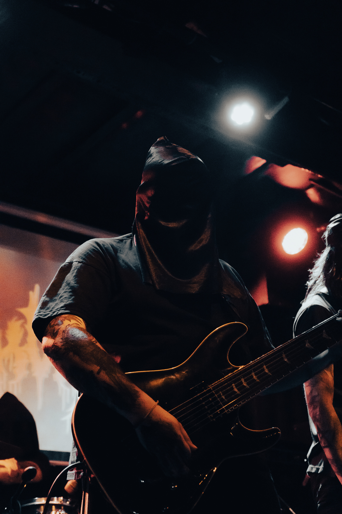
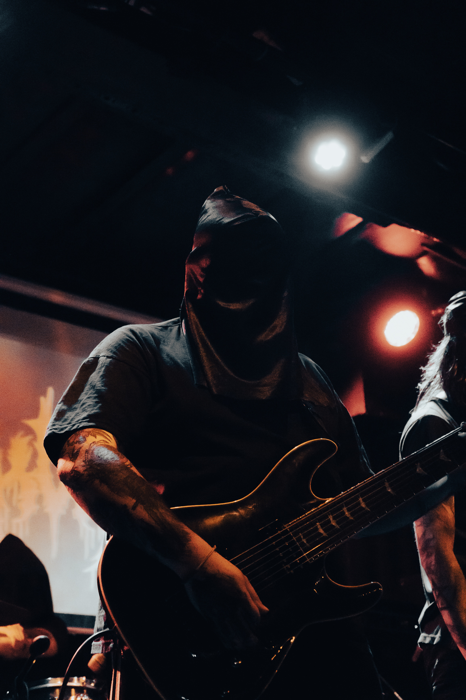
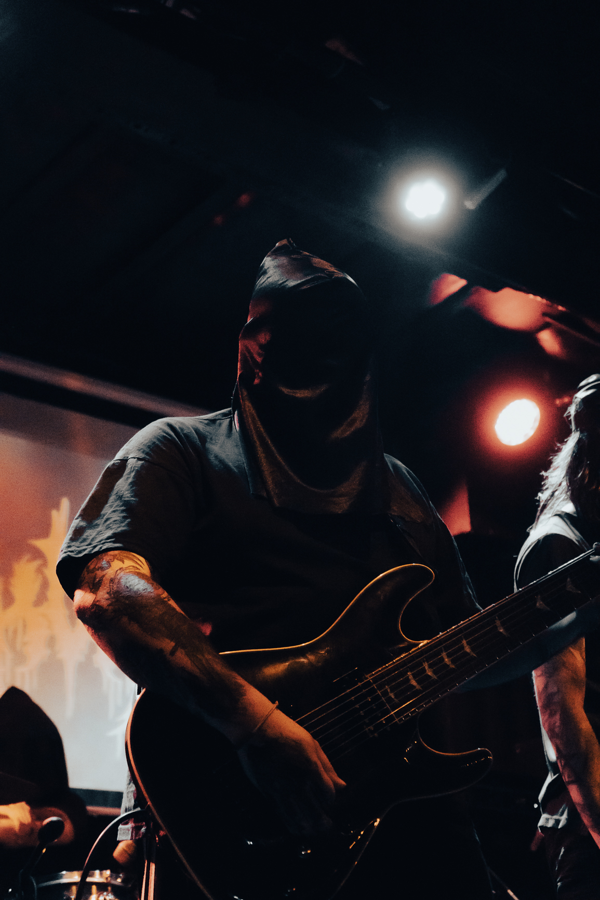

Sobre Nosotros
KVM nació a fines de 2019 y principios de 2020 en plena pandemia, solo se sabe que los primeros 3 integrantes fueron grabando cada parte por separado en pandemia (voz, batería y guitarra). Mas tarde
 

KVM nació a fines de 2019 y principios de 2020 en plena pandemia, solo se sabe que los primeros 3 integrantes fueron grabando cada parte por separado en pandemia (voz, batería y guitarra). Mas tarde
